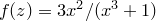
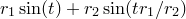

set label <label number> '<text>'
[<system>] <x>, [<system>] <y>
[ rotate <angle> ]
[ with colour <colour> ]
where <system> may take any of the values
( first | second | screen | graph | axis<number> )
The set label command is used to place text labels on graphs. The example
set label 1 'Hello' 0, 0
would place a label reading ‘Hello’ at the point  on a graph, as measured along the x- and y-axes. The tag 1 immediately following the keyword label is an identification number and allows the label to be subsequently removed using the unset label command. By default, the positional coordinates of the label are specified relative to the first horizontal and vertical axes, but they can alternatively be specified in any one of several coordinate systems. The coordinate system to be used is specified as in the example:
set label 1 'Hello' first 0, second 0
The name of the coordinate system to be used precedes the position value in that system. The coordinate system first, the default, measures the graph using the x- and y-axes. second uses the x2- and y2-axes. screen and graph both measure in centimetres from the origin of the graph. The syntax axis<n> may also be used, to use the th horizontal or vertical axis; for example, axis3:
set label 1 'Hello' axis3 1, axis4 1
A rotation angle may optionally be specified after the keyword rotate to produce text rotated to any arbitrary angle, measured in degrees counter-clockwise. The following example would produce upward-running text:
set label 1 'Hello' 1.2, 2.5 rotate 90
By default the labels are black; however, an arbitrary colour may be specified using the with colour modifier. For example,
set label 3 'A purple label' 0, 0 with colour purple
would place a purple label at the origin.